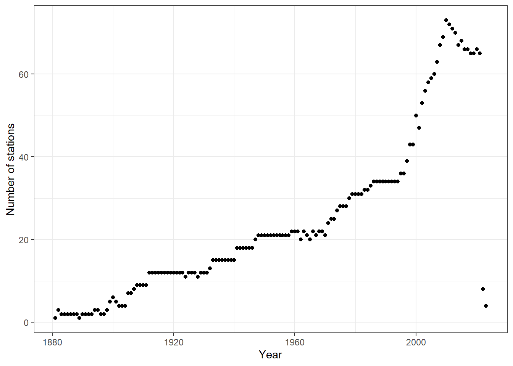
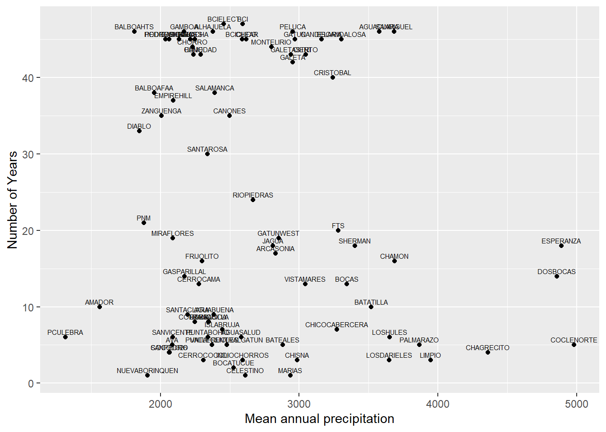
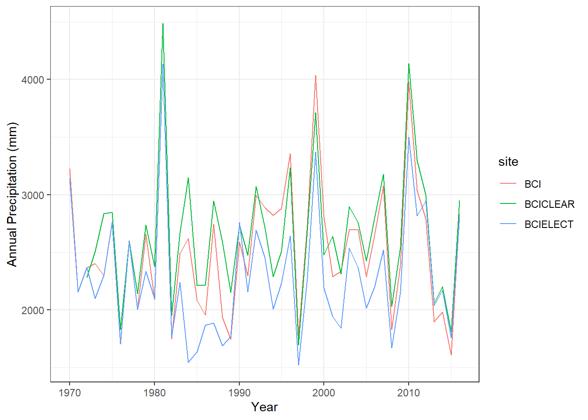
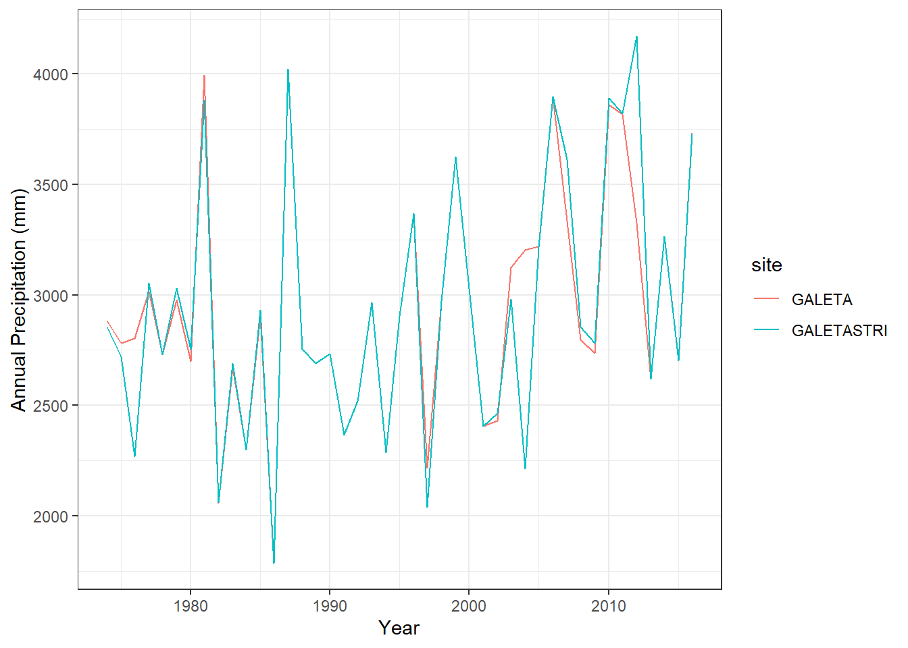
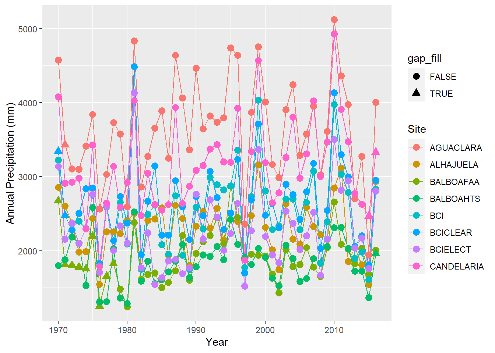
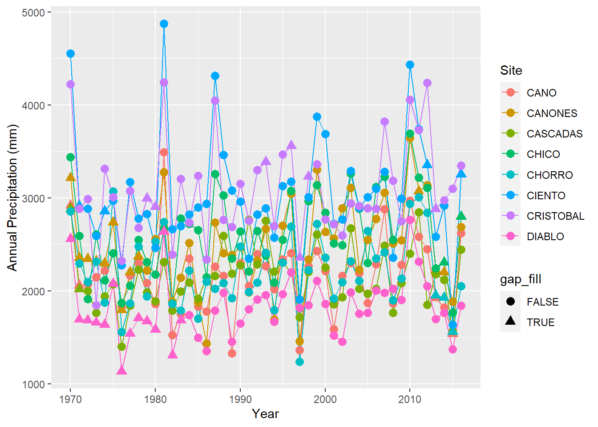
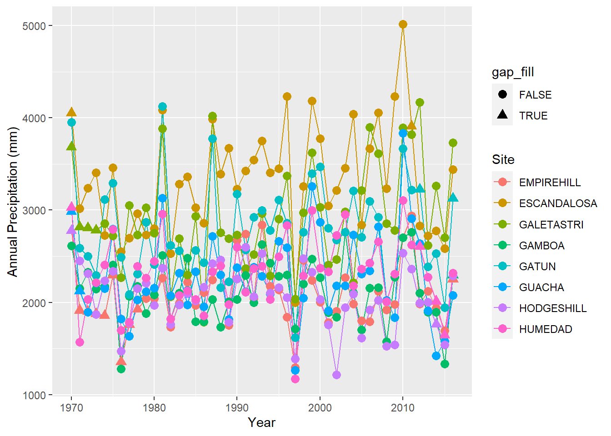
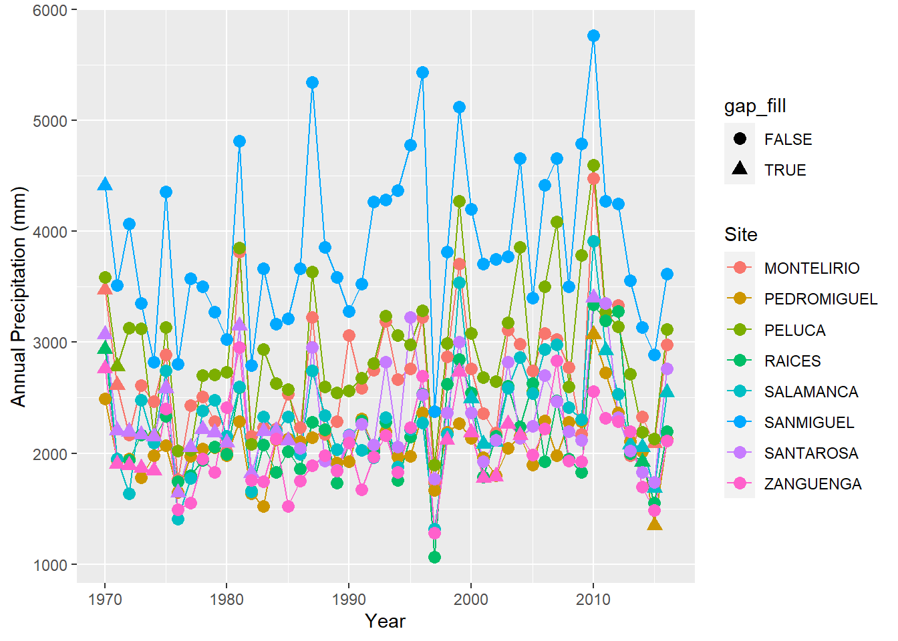

library(tidyverse)
library(ggplot2)
library(lme4)Ground data wrangling
Ground data wrangling and cleaning
About
The script imports the monthly precipitation summaries from meteorological stations managed by the ACP (Autoridad del canal de Panama) and STRI (Smitsonian Tropical Research institute). It calculates the response variables used in the Climate Panama project: annual mean precipitation and january-april precipitation. Data visualization is used to determine the group of sites that meet the minimum criteria.We fit a linear mixed model with random effects for year and fixed effect for site across the complete set of years. The code filters the timeseries for a period between 1970-2016 and ensures that no site is repeated. We keep all the real values and gap fill with the predicted values from the models.
Libraries
The data
The github repository contains a folder with all the ground data.
ACP_DATA<- "../data_ground/met_data/ACP_data/cleanedVV/ACP_data.csv"
STRI_DATA<-"../data_ground/met_data/STRI_data/STRI_monthlyPrecip.csv"We read in the data using base R function read.csv()
acpDATA<- read.csv(ACP_DATA)
striDATA<- read.csv(STRI_DATA)First we bind the rows of both data sources and create year and month columns
monthlyPrecipData<- acpDATA%>%bind_rows(striDATA)
monthlyPrecipData$year<- as.numeric(format(as.Date(monthlyPrecipData$month_year, format="%Y-%m-%d"),"%Y"))
monthlyPrecipData$month<- as.numeric(format(as.Date(monthlyPrecipData$month_year, format="%Y-%m-%d"),"%m"))How many stations there is in each of the years?
nstations<- monthlyPrecipData %>% group_by(year)%>% filter(!is.na(monthly_precip))%>%summarize(nstations= n_distinct(site))
ggplot(nstations, aes(x=year,y=nstations))+
geom_point()+
theme_bw()+
labs(x="Year", y="Number of stations")
Calculate the response variables: Annual precipitation and January through April precipitation. We only keep the years that have 12 months of data.
precipitation_data<- monthlyPrecipData %>%
filter(!is.na(monthly_precip))%>%
group_by(site, year)%>%filter(n() == 12)%>%
summarize(annualPrecip = sum(monthly_precip, na.rm = TRUE),
jfmaPrecip = sum(monthly_precip[month %in% c(1,2,3,4)], na.rm = TRUE))Calculate long term averages per site
long_term_averages<-precipitation_data%>%group_by(site)%>%
summarize(longterm_mean_annual= mean(annualPrecip),longterm_mean_jfma=mean(jfmaPrecip))How many years of actual data does every site has?
nyears= precipitation_data %>% filter(year>=1970 & year<=2016)%>%
group_by(site) %>% tally() %>%
rename(nyears= n)%>% full_join(long_term_averages,by='site')
ggplot(nyears, aes(x = longterm_mean_annual, y = nyears)) +
geom_point() +
geom_text(aes(label = site), vjust = -0.5, size = 2) +
labs(x = "Mean annual precipitation", y = "Number of Years")
ggsave("plots/meanannual_v_nyears.jpg", width = 10, height = 6, dpi = 300)QAQC for sites
There is met stations located very close by to each other. We need to ensure that the set of data aren’t repeated.
An example is the Barro Colorado Island: which has 3 MET stations. Two of them are located within meters of each other. We will run some basic metrics to ensure this arent replicated stations.
BCI_subset<- precipitation_data%>%
filter(site=="BCI"|site=="BCICLEAR"|site=="BCIELECT")%>%
filter(year>=1970 & year<=2016)
#test the differences between the three sets of data
means_BCI<-BCI_subset%>%group_by(site)%>%summarize(mean_annual_precip=mean(annualPrecip),sd_annual_precip=sd(annualPrecip),n=n())
anova_result <- aov(annualPrecip ~ site, data = BCI_subset)
tukey_results <- TukeyHSD(anova_result)
#ANOVA results
print(means_BCI)# A tibble: 3 × 4
site mean_annual_precip sd_annual_precip n
<chr> <dbl> <dbl> <int>
1 BCI 2538. 590. 47
2 BCICLEAR 2649. 562. 45
3 BCIELECT 2292. 538. 47summary(anova_result) Df Sum Sq Mean Sq F value Pr(>F)
site 2 3077427 1538713 4.842 0.0093 **
Residuals 136 43215268 317759
---
Signif. codes: 0 '***' 0.001 '**' 0.01 '*' 0.05 '.' 0.1 ' ' 1print(tukey_results) Tukey multiple comparisons of means
95% family-wise confidence level
Fit: aov(formula = annualPrecip ~ site, data = BCI_subset)
$site
diff lwr upr p adj
BCICLEAR-BCI 110.2735 -168.3210 388.86788 0.6172843
BCIELECT-BCI -245.9634 -521.5129 29.58622 0.0905150
BCIELECT-BCICLEAR -356.2368 -634.8312 -77.64239 0.0081833ggplot(BCI_subset, aes(x=year, y=annualPrecip, color=site))+
geom_line()+theme_bw()+labs(x="Year", y="Annual Precipitation (mm)")
The metadata indicates that both BCICLEAR and BCIELECT are both different sensor. BCICLEAR is an standard rain gauge that is emptied manually by technicians. On the other hand, BCIELECT is a tipping bucket showing 356 mm less annual mean precipitation. Finally, the BCI station managed by the Panama canal authority is placed on the Gatun lake shore. We will keep the three sites
The GALETA station appears on the ACP monthly summary and it is also listed in the STRI datasets, here given the name of GALETASTRI. Are this different sensors? or repeated sets of data.
#GALETA AND GALETASTRI
GALETA_subset<- precipitation_data%>% filter(site=="GALETA"|site=="GALETASTRI")%>%
filter(year>=1970 & year<=2016)
ggplot(GALETA_subset, aes(x=year, y=annualPrecip, color=site))+geom_line()+theme_bw()+labs(x="Year", y="Annual Precipitation (mm)")
#anova
means_GALETA<-GALETA_subset%>%group_by(site)%>%summarize(mean_annual_precip=mean(annualPrecip),sd_annual_precip=sd(annualPrecip),n=n())
anova_galeta<- aov(annualPrecip ~ site, data = GALETA_subset)
tukey_results_galeta <- TukeyHSD(anova_galeta)
#ANOVA results
print(means_GALETA)# A tibble: 2 × 4
site mean_annual_precip sd_annual_precip n
<chr> <dbl> <dbl> <int>
1 GALETA 2933. 533. 42
2 GALETASTRI 2930. 585. 43summary(anova_galeta) Df Sum Sq Mean Sq F value Pr(>F)
site 1 333 333 0.001 0.974
Residuals 83 26062365 314004 print(tukey_results_galeta) Tukey multiple comparisons of means
95% family-wise confidence level
Fit: aov(formula = annualPrecip ~ site, data = GALETA_subset)
$site
diff lwr upr p adj
GALETASTRI-GALETA -3.957544 -245.751 237.8359 0.9741082The GALETA case shows very little to no difference in the yearly averages for most of the years. The metadata of GALETASTRI mentions the use of Limon Bay to fill in the gaps and the Horizontal version of the ACP monthly summaries lists GALETA as ‘GALETA(STRI)’. We conclude that the sets of data are repeated. We will keep GALETASTRI since this monthly summaries were calculated in this study
Remove the GALETA station
precipitation_data_subset<- precipitation_data %>% filter(site!="GALETA") Filter the stations with more than 30 years of data between 1970 and 2016
precipitation_data_30<- merge(precipitation_data_subset, nyears, by.x= "site", by.y="site")
precipitation_data_subset<- precipitation_data_30%>% filter(nyears>=30)
unique(precipitation_data_subset$site) [1] "AGUACLARA" "ALHAJUELA" "BALBOAFAA" "BALBOAHTS" "BCI"
[6] "BCICLEAR" "BCIELECT" "CANDELARIA" "CANO" "CANONES"
[11] "CASCADAS" "CHICO" "CHORRO" "CIENTO" "CRISTOBAL"
[16] "DIABLO" "EMPIREHILL" "ESCANDALOSA" "GALETASTRI" "GAMBOA"
[21] "GATUN" "GUACHA" "HODGESHILL" "HUMEDAD" "MONTELIRIO"
[26] "PEDROMIGUEL" "PELUCA" "RAICES" "SALAMANCA" "SANMIGUEL"
[31] "SANTAROSA" "ZANGUENGA" Use the lme4 package to fit a linear mixed model with random effects for year and fixed effects for site for each of the response variable (annual precipitation and january through april precipitation). Note that we have created the model using all the avaliable years.
model_annual<- lmer(annualPrecip~ site +(1|year), data=precipitation_data_subset)
model_jfma<- lmer(jfmaPrecip~ site +(1|year), data=precipitation_data_subset)We then filter the data to only the desired years.
precipitation_data_subset<- precipitation_data_subset%>%filter(year>=1970,year<=2016)Create an empty data frame to predict the yearly and January through April precipitation.
year_sequence<- seq(1970,2016)
sites<- unique(precipitation_data_subset$site)
precipitation_predicted<- expand.grid(year_sequence,sites)%>%rename(year="Var1",site="Var2")
precipitation_predicted $predicted_annual<- predict(model_annual,newdata=precipitation_predicted)
precipitation_predicted$predicted_jfma<- predict(model_jfma,newdata=precipitation_predicted)Gap fill the missing years using the predicted values to get a gap free time series.
precipitation<- precipitation_predicted %>%
full_join(precipitation_data_subset, by=c("site","year"))%>%
mutate(gap_fill=if_else(is.na(annualPrecip),TRUE,FALSE),
annual=if_else(is.na(annualPrecip),predicted_annual,annualPrecip),
jfma=if_else(is.na(jfmaPrecip),predicted_jfma,jfmaPrecip))We can visualize subsets of the final precipitation data frame. Note that some sites will have more instances of predicted response variables.
ggplot(precipitation %>% filter(site %in% sites[1:8]),
aes(x = year, y = annual, group = site,color=site,shape=gap_fill)) + geom_line() + geom_point(size=3) +
labs(x = "Year", y = "Annual Precipitation (mm)", color = "Site")
ggplot(precipitation %>% filter(site %in% sites[9:16]),
aes(x = year, y = annual, group = site,color=site,shape=gap_fill)) + geom_line() + geom_point(size=3) +
labs(x = "Year", y = "Annual Precipitation (mm)", color = "Site")
ggplot(precipitation %>% filter(site %in% sites[17:24]),
aes(x = year, y = annual, group = site,color=site,shape=gap_fill)) + geom_line() + geom_point(size=3) +
labs(x = "Year", y = "Annual Precipitation (mm)", color = "Site")
ggplot(precipitation %>% filter(site %in% sites[25:32]),
aes(x = year, y = annual, group = site,color=site,shape=gap_fill)) + geom_line() + geom_point(size=3) +
labs(x = "Year", y = "Annual Precipitation (mm)", color = "Site")
Finally, save the dataframe for its later use.
write.csv(precipitation,"../tables/precipitation.csv", row.names = FALSE)